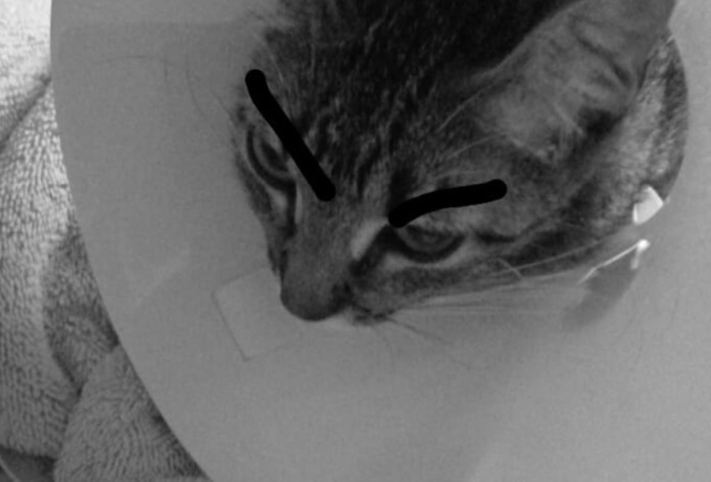

La mision del proyecto es reducir el numero de animales callejeros que hay en Cd.Mante Tamaulipas
con la finalidad de que sean adoptados y/o esaterilizados para evitar que se reproduzcan sin control y sigan trayendo mas animalitos.
Parte de la mision del proyecto es entregar tripticos y folletos alas personas, con informacion que
este relacionada al tema para que esten al tanto de la situacion de estos animalitos. Tambien tratamos de crear conciencia en las personas para que asi
se animen a adoptar a un perrito.
Con nuestra campaña de esterilizacion y vacunacion podemos beneficiar ambas partes.
 |  |  |